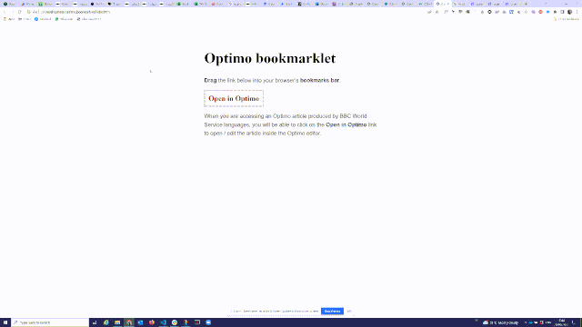

Drag the link below into your browser’s bookmarks bar.
Optimo word countWhen you edit an Optimo article, you can click on this bookmarklet to check the word count. This tool can be used by non-Latin WS language services until the word count inside the Optimo editor is fixed.
